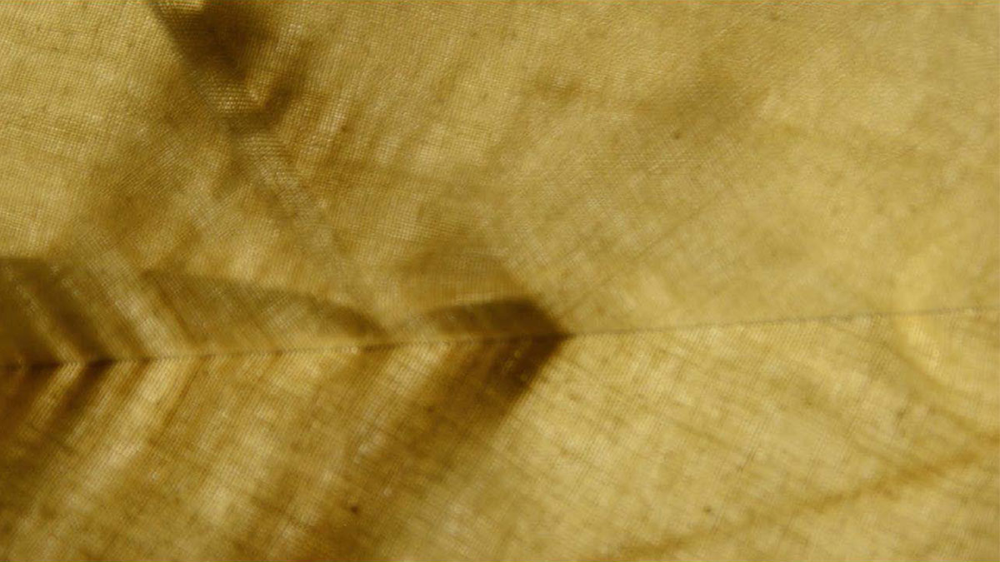
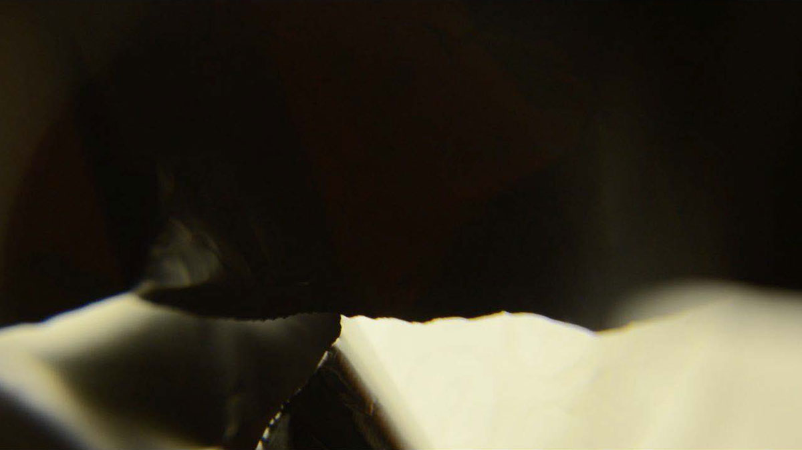
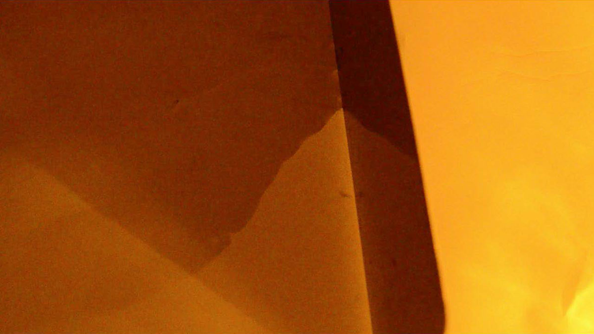
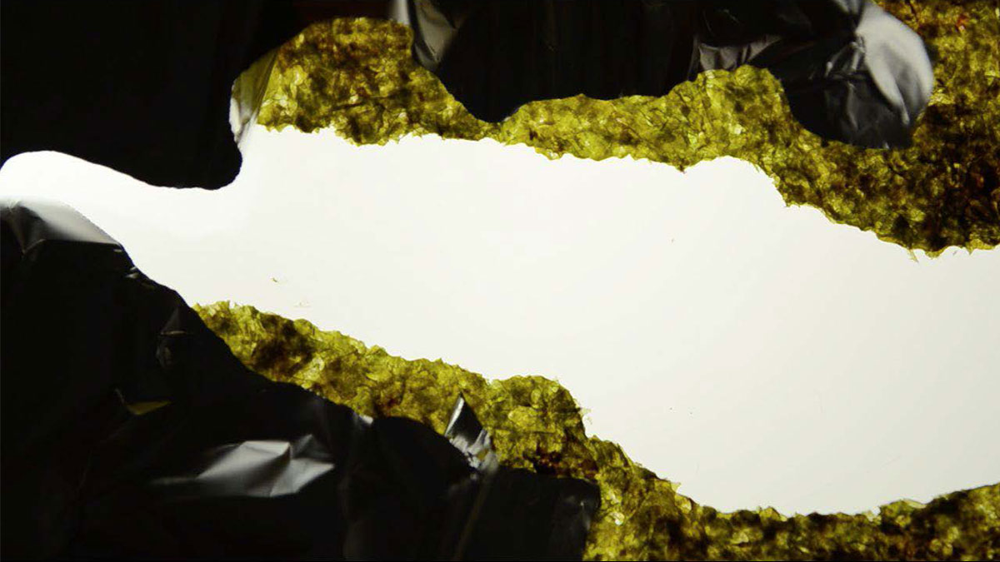
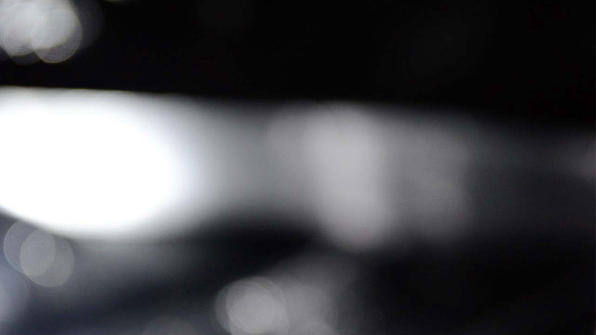
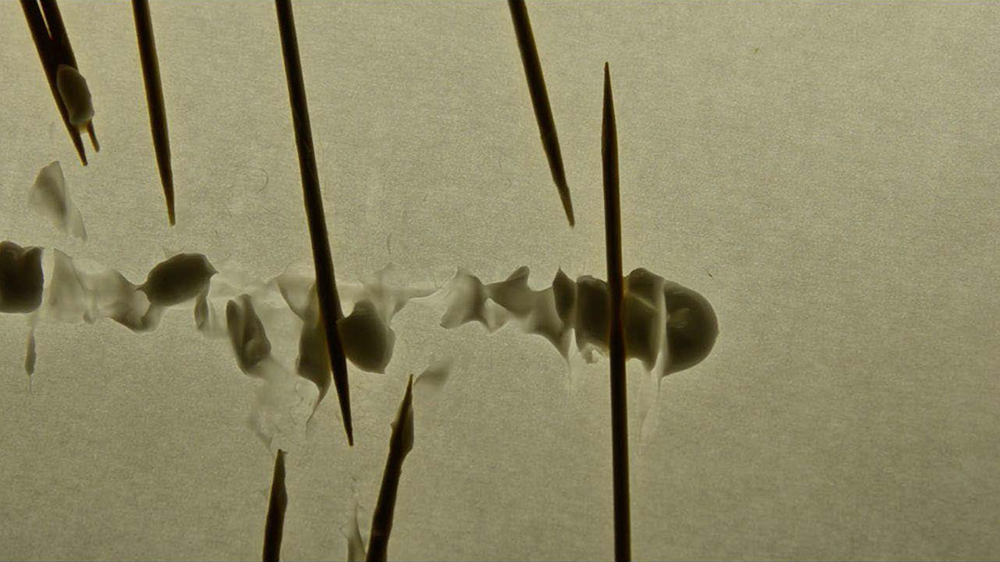
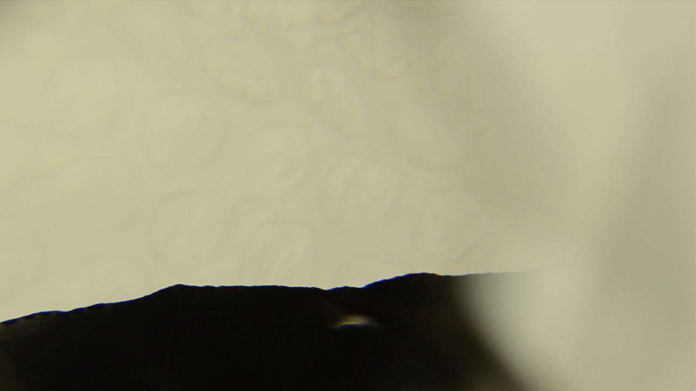
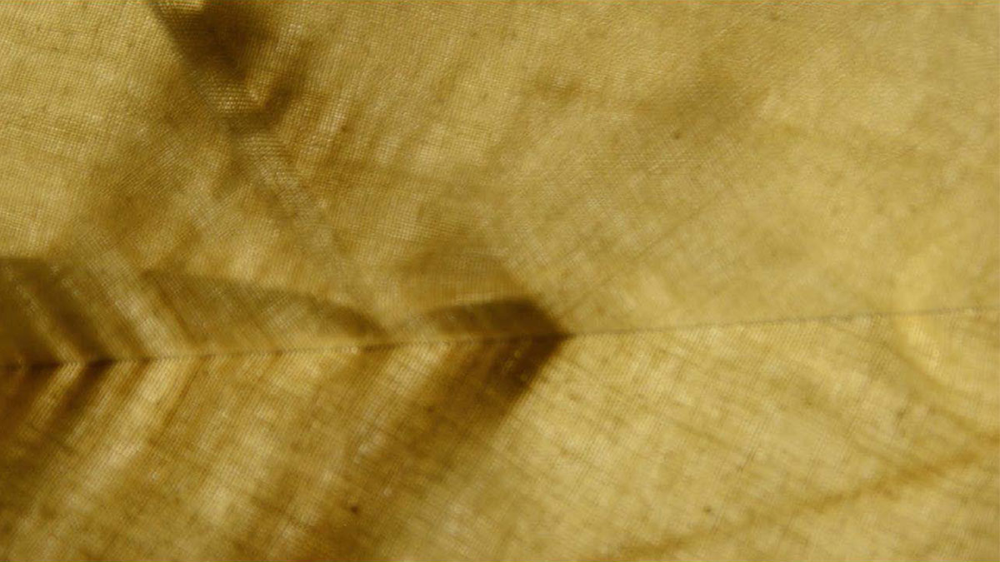
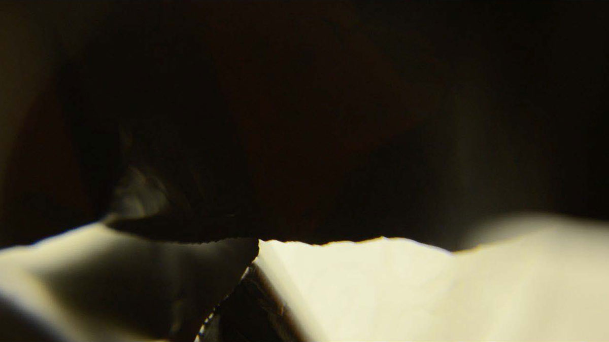
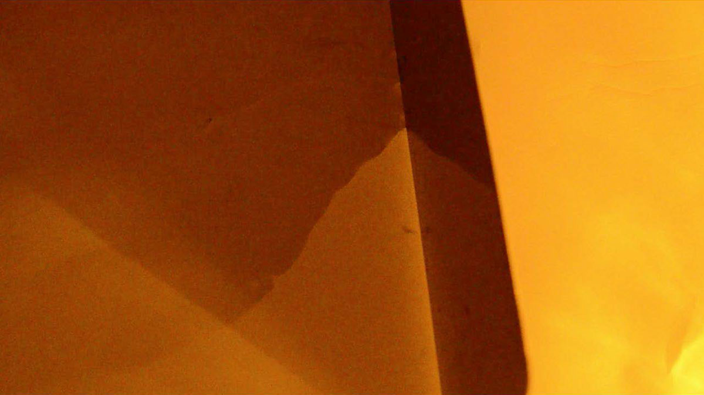
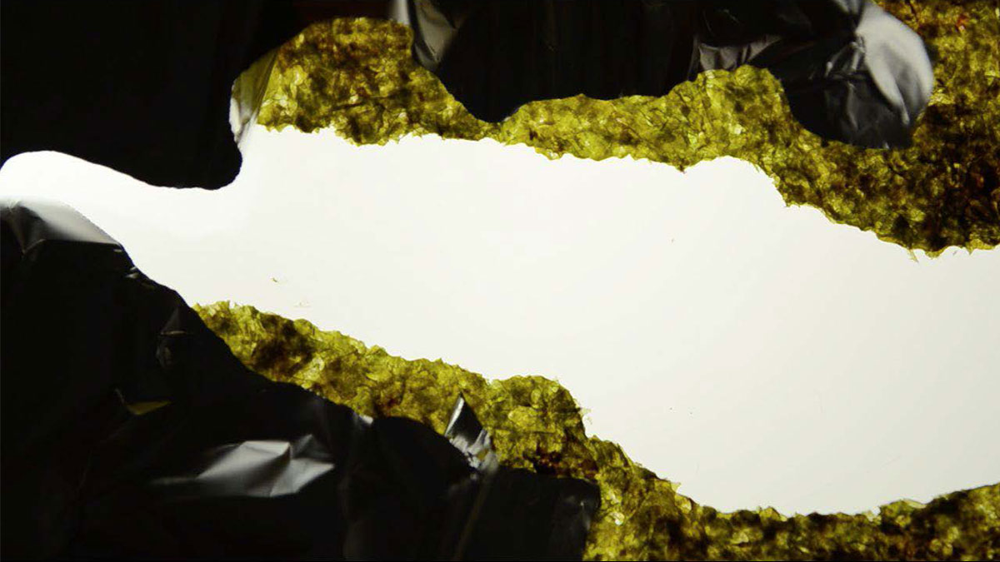
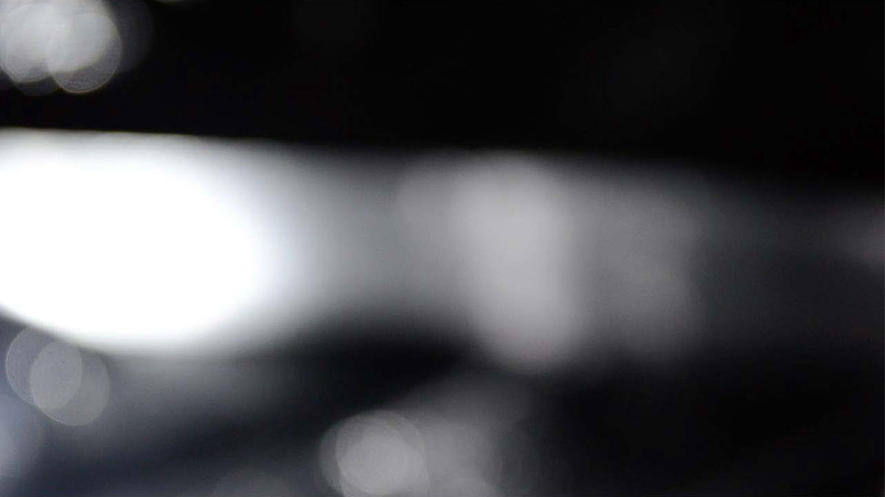
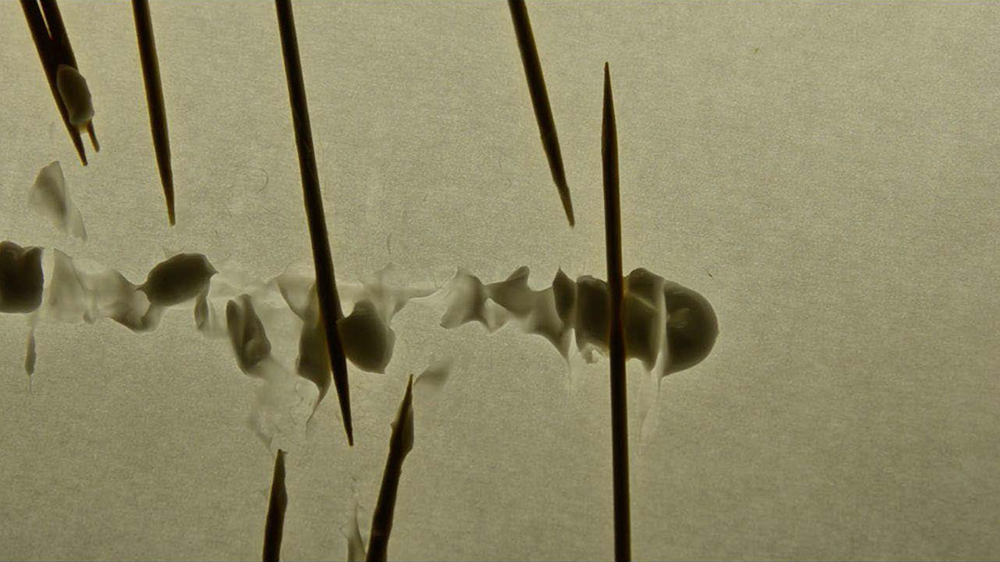
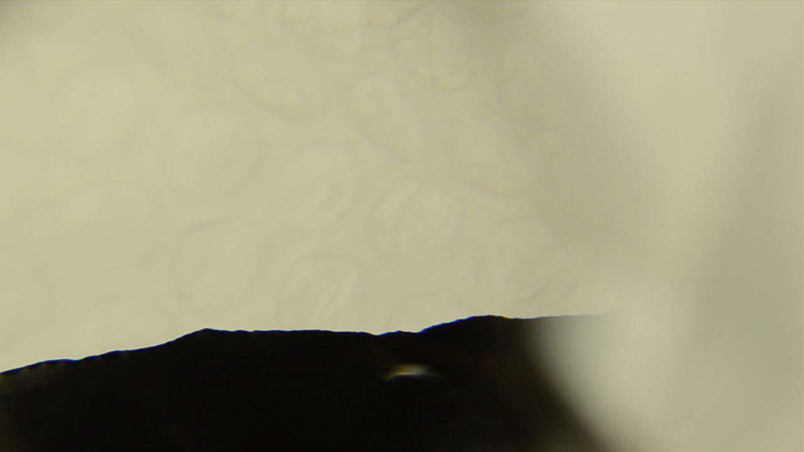
Der Traum / The Dream
Video
2015
»Der Traum« is composition of abstract moving images shot on a light table combined with a poem by Jorge Luis Borges read in a interplay of Angela Winkler, one of the greatest german theatre actresses, and me as her whispering prompter.